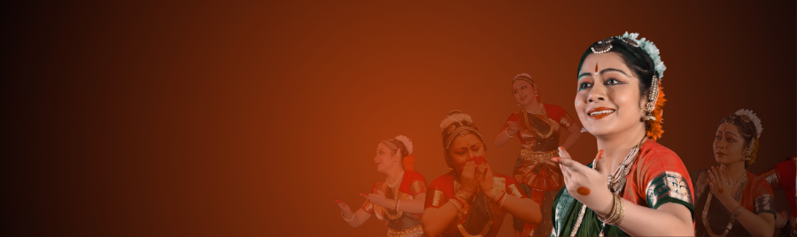
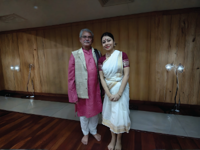
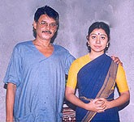

As Late Dr. Manjusree Chaki Sircar puts, "Guru Khagendranath Barman's efforts to establish a school in the Kalakshetra style are a welcome event in the Calcutta dance world. His method of teaching is extremely demanding. He being an excellent performer, his students have the extra advantage of watching his example."
He has spent many years of his life under the direct tutelage of his 'Athai', Guru Rukmini Devi and became an outstanding disciple of her. He was the Head of the Department of Dance at Bharatiya Nritya Kalamandir, Ranchi. Later in 1983, he joined as a lecturer of dance (Hons + PG) in Rabindra Bharati University. Presently he is the Selection - grade Senior lecturer in RBU.
He is a gifted singer and has given programmes in AIR. In 1995 he was felicitated as 'Nritya Guru' by WBSMA and WBDGF. In 1984, he was given 'Singarmani' Award by Sur Singar Samsad, Bombay. He conducts workshops and presents seminars organized by Rabindra Bharati University, Paschim Banga Rajya Sangeet Academy, Youth Wing of Bharatiya Bhasha Parishad and others.
He acts as a guide to Fellowship and scholarship students under the Cultural and Human Resource Development, Govt. of India. As a dancer, he has performed in different parts of India and in USSR, Poland, Czechoslovakia and Germany as member of Indian Cultural Delegation. He has also been honoured by ICCR as their panel artist.
He is the author of 'Bharatiya Nritya Darshan O Tatva' and Angik Abhinaya (Sri Bhumi Publication). He has produced articles and seminar papers in 'Nritya Kalpa' magazine of WBDGF and 'Influence of literature on Indian Classical Dances' (RBU publication).
He and his students have also participated in an UGC documentary film "Making of a Dancer, Bharatnatyam" organised by EMRC, Kolkata. He has choreographed and composed Dance - Ballets like 'Navrasa', 'Ritusamagam', 'Rabindra Kavya Rupayan', 'Anubhav Darpan' and traditional items and has produced "Navarasa" and "Bharatnatyam" in audio form under Music 2000 & BSP respectively.
Guru Barman has also produced NRITYANJALI (vol.1 & 2) a VCD on bharatnatyam dance items and has conceptualized ANGIKA SADHANA, an audio visual form on the basics of bharatnatyam. Guruji did his best to propagate 'Kalakshetra' style in kolkata during these years and had moulded a number of talented dancers of which many were National scholarship (Govt. of India) holders.